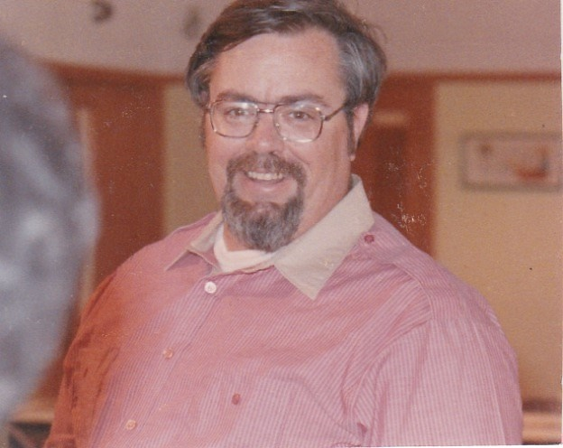
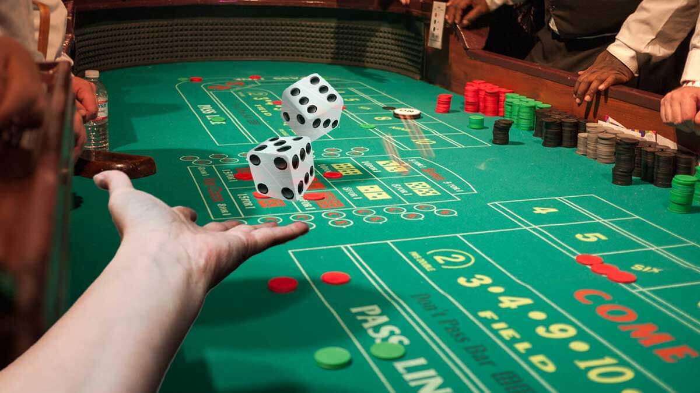
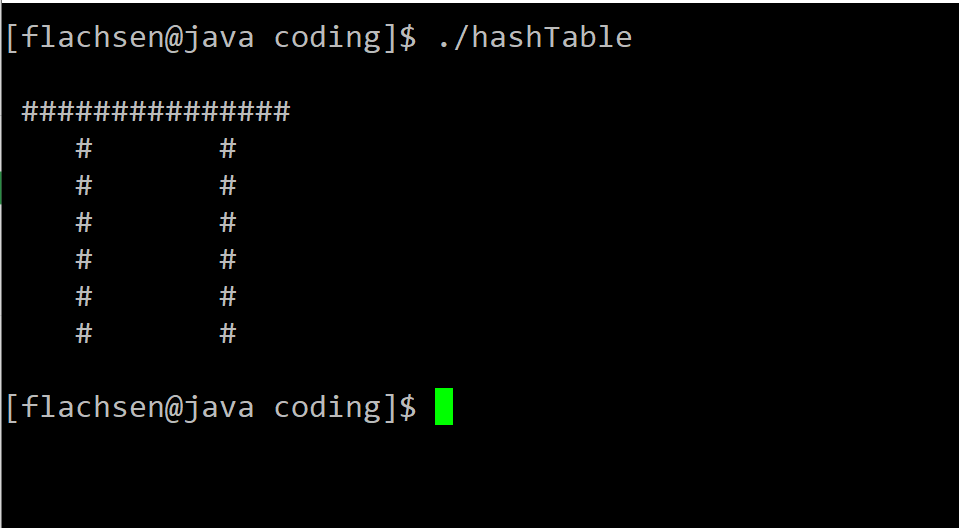

I was born in a suburb of Santa Barbara, CA called Goleta in
1986. It is my opinion that there is no more hospitable climate
for humans than the paradise of California's coastline. Any day
above 80° F was consider hot, and any day below 70° F was
considered cold. I am grateful to my parents for the thought and
consideration they put into their family planning.

Unfortunately, those plans were uprooted when my father was
diagnosed with kidney cancer in 1991. After a long battle with
the disease, he passed away in February 1993. I was six years old
at the time. Needless to say, this affected the rest of my life
in a profound way. However, life does go on and the remainder of
my childhood was spent doing well in school, bowling, and being
sub-par at other sports.
I started my first job as a porter at the local bowling center when
I was fourteen. This job helped me learn fiscal and professional
responsibility. I worked in various positions at the bowling center
over the course of seven years, ultimately becoming the Front Desk
night manager. Simultaneously, I went to three years of high school
before testing out and acquiring my GED at 16.


The next fall, I began attending community college aimlessly.
After several years of dabbling in various majors, I settled on
obtaining an A.A. in Video Production in the spring of 2009. I moved
to North Hollywood, but could not find any work in the film industry
over the entire summer. A friend of mine was living in Las Vegas at
time, so I moved to the desert and began attending dealer school.
Shortly after moving to Las Vegas, I began my career as a
table games dealer. I primarily dealt Craps, but I had
learned Blackjack at dealer school as well. I aggressively
pursued better dealing opportunities by transferring between
properties and learning new games. As is common for table
games dealers, I worked in two different casinos simultaneously
for a five years.

It is my opinion that table games dealing is the best career
a person can have with no higher education required. The
hourly pay is only slightly above minimum wage, but the tips
(Called tokes in the industry) can bring a dealer's annual
income well above the national median. Furthermore, table
games dealers usually get a 20-minute break for every hour
they spend on the table. This equates to spending a quarter
of one's shift on break.
Despite dealing being an excellent job, there are a few aspects which
I disliked. Most notably were the shift hours. Since the table
games industry is a 24-hour business, the shifts were split into
three categories: Graveyard, Days, and Swing. My personal
preference was working Graveyard shift, but waking up at 2:30 A.M.
was not always easy.


While I was working as a dealer, I came to the realization
that I did not want to stay in that job for another 30 years.
So, I decided to work one full-time dealing job at the MGM
Grand and attend UNLV full-time to obtain my B.S. in
Computer Science. I worked on this degree for four years
(Including during the Covid-19 pandemic) until I graduated
Magna Cum Laude in the Spring of 2021.
The Computer Science curriculum at UNLV has a strong focus
on the theoretical limitations of computers. Algorithm
Analysis, Automata Theory, and Computer Organization delved
into what problems computers can and cannot solve. I found
the theoretical facets of the discipline fascinating, but
I had hoped for more practical learning from the university.


I am a bit embarrassed to admit that I did not use the most
up-to-date tools for software development when I was attending
UNLV. I did all my coding assignments using Emacs while
SSH'd onto the school server. I even did all my x86 Assembly
assignments in the basic text editor (Notepad). Only one course
even introduced the concept of version control and the software
development life cycle.
While I was attending UNLV, I was still dealing full-time at
the MGM Grand. In my third year, MGM Resorts had a presentation
at UNLV to recruit software engineers for their summer internship
program. Unfortunately, I could not take on the internship since I
was already working for the company, but I did introduce myself to
the recruiter and managers. During my final semester, I reached
out via email to one of the managers I had met. We began the process
of transferring from the Table Games department to the corporate
software development team.


I was amazed at how little my education prepared me for the
real world of software development. Not only did I have to
familiarize myself with the company specific tools and procedures,
but I also had to quickly learn some standard tools of the trade,
like GitHub, Visual Studio, and Kanban boards.
I am proud of how much I have learned since starting as a
software engineer, and I am excited for all the new things I
will learn as I continue my professional development.